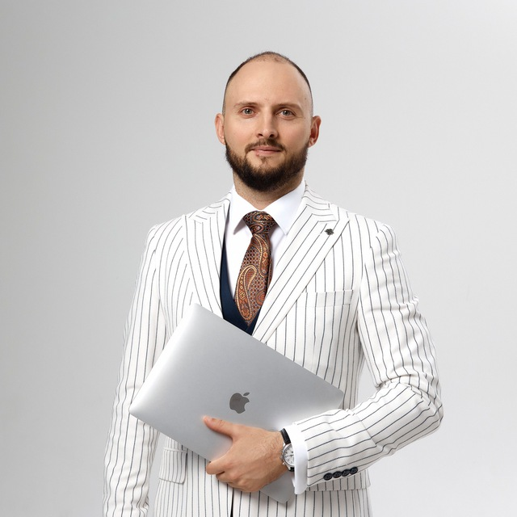

10+ лет в digital и EdTech. Специализация — построение маркетинга как управляемой системы роста выручки и маржи: unit-экономика, декомпозиция P&L, фабрика экспериментов, синхронизация маркетинга и продаж.

Business partner по росту выручки, маржи и управляемости маркетинга. Захожу в роли CMO там, где нужно связать маркетинг с unit-экономикой, продажами, аналитикой и скоростью принятия решений.
Ключевые результаты, подтверждающие управляемый рост выручки и маржи в разных бизнес-контекстах.
10+ лет в digital и EdTech. Специализация — построение маркетинга как управляемой системы роста выручки и маржи: unit-экономика, декомпозиция P&L, фабрика экспериментов, синхронизация маркетинга и продаж. Опыт управления командой до 17 человек, бюджетами до 7,7 млн ₽/мес и growth-функцией в компаниях с выручкой от сотен миллионов рублей в год. Целевая роль: CMO / Director of Growth & Revenue / Head of Growth в EdTech или digital-компании с амбициями кратного роста. Готов к удалённому формату.
Использую AI в контент-продакшне и маркетинговых операциях как инструмент ускорения выпуска, тестирования новых форматов и повышения эффективности команды.
Особенно полезен EdTech, digital и founder-led бизнесам, где маркетинг напрямую влияет на выручку, unit-экономику и рост компании.
Лучше всего я полезен компаниям, где маркетинг уже влияет на деньги и нужен руководитель, способный собрать выручку, аналитику, команду и приоритеты в единую систему роста.